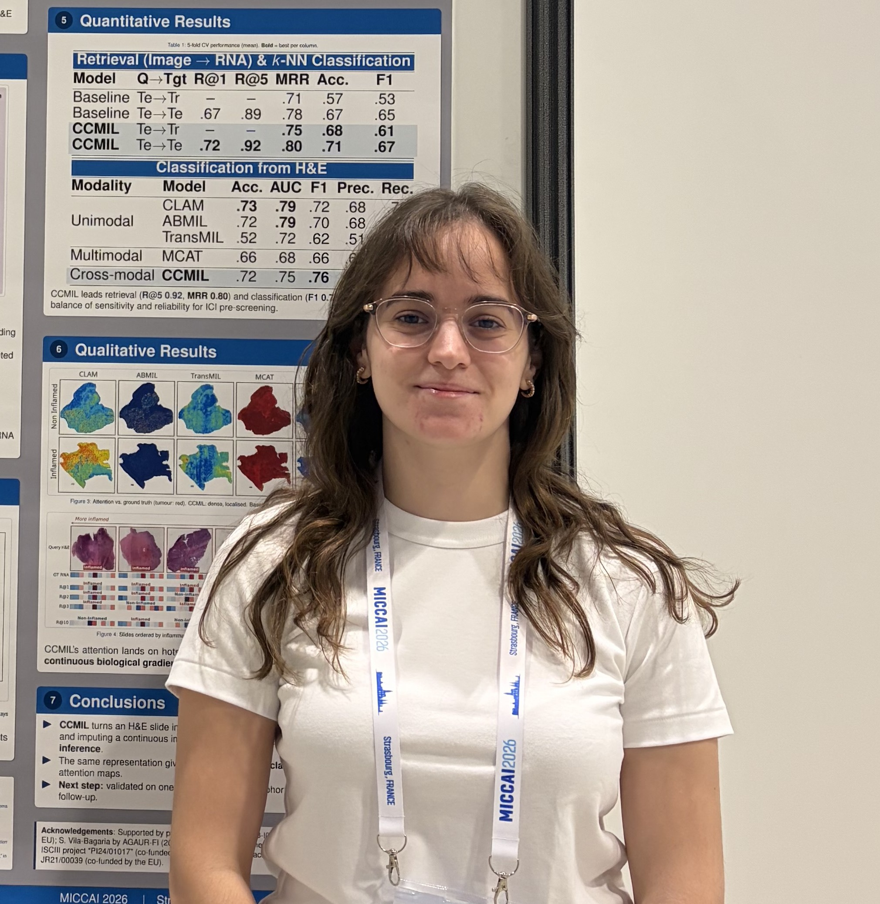

Computer Vision Engineer & Medical Imaging Researcher
at Universitat Politècnica de Catalunya
Developing AI pipelines for medical image analysis — from generative MRI synthesis to histopathology classification. Curious, technically rigorous, and driven by problems that matter for people's health.

Open to research collaborations, PhD stay opportunities, and conversations about AI in medical imaging. Don't hesitate to reach out.